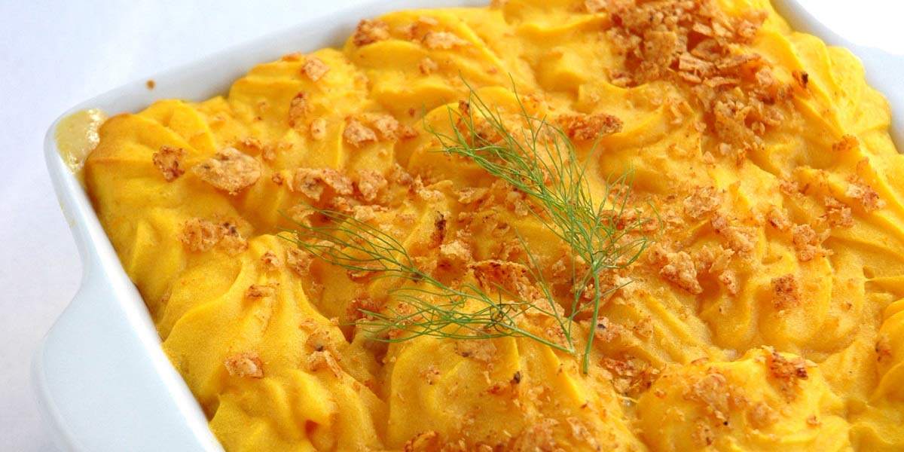

Fisherman’s Pie
Recipe Specification
Ingredients List
| Ingredients | Quantity |
|---|---|
| Maris Piper Potatoes | 1kg |
| Unsalted Butter | 80g |
| Double Cream | 100ml |
| Shallots | 2x1 |
| Leeks | 1x1 |
| Celery | 2 stalks |
| Plain Flour | 25g |
| Whole Milk | 200ml |
| Fish Stock | 200ml |
| Cod Fillet | 120g |
| Smoked Haddock | 120g |
| Cooked Prawns | 120g |
| Chives | 60g |
| Salt & Pepper | To Taste |
Yield: 6-8 portions
Preparation
- Peel and potatoes into equally sized pieces and place in a saucepan of cold water .
- Peel and finely dice shallots.
- Wash and finely slice leek.
- Wash and finely dice celery.
- Cut cod fillet into 1 inch chunks.
- Cut haddock into 1 inch chunks.
- Finely chop chives.
- Pre-heat oven to 195’C.
Cooking Instructions
- Season saucepan of potatoes and place over a medium/high heat. Bring to the boil and reduce to the simmer. Cook for 15-20 min until potatoes are soft.
- In separate pan, add vegetable oil and place over a medium/high heat.
- Add shallots, leeks and celery to pan and sauté for 4-5 minutes.
- Add flour and coat vegetables. Followed by cod, haddock, prawns, chives, milk, stock and a ½ tsp of salt. Stir continually until sauce thicken before removing from heat and setting aside.
- Drain potatoes of water and return to pan before mashing with potato masher. Add butter and double cream before seasoning with salt and pepper.
- Transfer mash potato to piping bag with star nozzle.
- Place fish pie mixture at the base of a baking dish and evenly distribute. Pipe mash potato on top and place dish in the oven for 10-12 minutes.

Serving Suggestions
Fish pie goes great with steamed vegetables.
Storing instructions
Allow to cool to room Temperature and store in an air-tight container before placing in the refrigerator. Consume within 4 days of making.
Reheating Instructions
place in the microwave for 1-2 minutes.